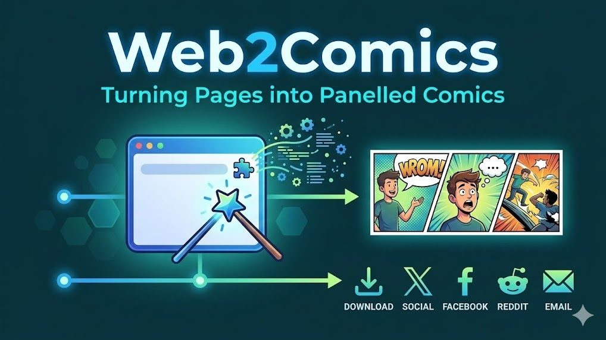
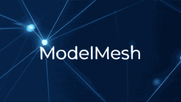
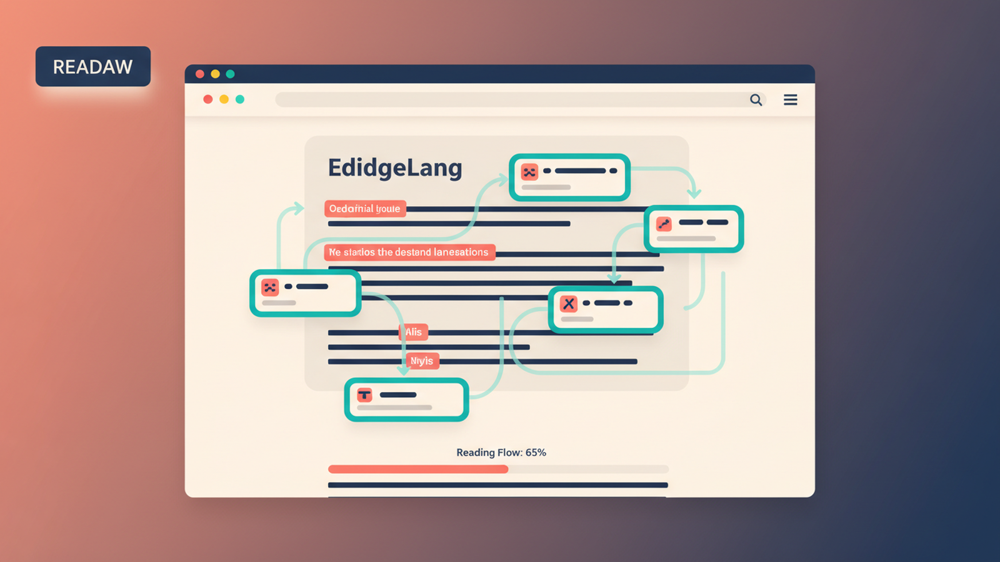

Building
Web2Comics Chrome Extension and Bot
Converts web pages into comic-style visual summaries to make dense information faster to absorb and easier to share.
A focused set of recent build projects from the original projects source, with emphasis on practical tooling and applied AI workflows. You can also browse related work under current research projects.

Building
Converts web pages into comic-style visual summaries to make dense information faster to absorb and easier to share.



